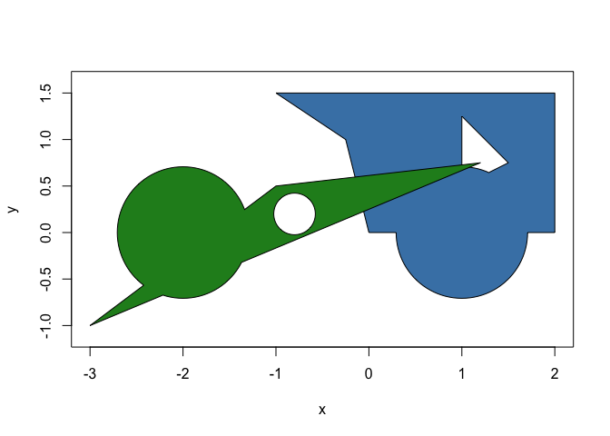

polyclid extents the computational geometry framework provided by euclid by providing base classes and algorithms for working with 2D polygons and polylines. The new classes provided by polyclid are:
polyline: A line consisting of several segments joined consecutively at their end points
polygon: A polygon optionally with holes but without any “islands” (e.g. no disjoint parts). The polygon can be unbounded, i.e. it extents infinitely on the plane
polyline_set: A collection of polylines especially useful as intermediary representation for some workflows as it facilitates line sweeping
polygon_set: Like above but for polygons. Boolean operations on polygons will create sets as the result may be disjoint areas
As for algorithms, to the extent that it makes sense all methods provided by euclid has a counterpart in polyclid. Further, methods specific to polygons and polylines are provided such as 2D boolean set operations, polygon validation, etc.
It is not intended that polyclid provides the full set of polygon-centric operations, rather this is the foundational package that other packages in the euclid ecosystem builds upon for more specialized algorithms.
Installation
You can install the development version of polyclid like so:
devtools::install_github("thomasp85/polyclid")Example
Polygons are areas in 2 dimensions, often bounded by an outer ring and possibly with holes. In polyclid it is not possible for a polygon to be disjoint, i.e. it cannot have islands outside the outer ring or inside the holes.
library(polyclid)
# Create a polygon by specifying the x and y coordinates of the rings
p <- polygon(
x = c(0, 2, 2, -1, -0.25, 1, 1, 1.5, 1.2, -1, -3),
y = c(0, 0, 1.5, 1.5, 1, 0.5, 1.25, 0.75, 0.75, 0.5, -1),
id = c(1, 1, 1, 1, 1, 1, 1, 1, 2, 2, 2),
hole_id = c(1, 1, 1, 1, 1, 2, 2, 2, 1, 1, 1)
)
p
#> <2D polyclid_polygons [2]>
#> [1] [Boundary: 5, Range: <<-1, 0>, <2, 1.5>>, Holes: 1]
#> [2] [Boundary: 3, Range: <<-3, -1>, <1.2, 0.75>>, Holes: 0]The polygon type works in much the same way as the base euclid types and responds to the same methods where appropriate:
approx_area(p)
#> [1] 3.625 1.400
cardinality(p)
#> [1] 8 3
vert(p)
#> <2D points [11]>
#> [1] <x:0, y:0> <x:2, y:0> <x:2, y:1.5> <x:-1, y:1.5>
#> [5] <x:-0.25, y:1> <x:1, y:0.5> <x:1, y:1.25> <x:1.5, y:0.75>
#> [9] <x:1.2, y:0.75> <x:-1, y:0.5> <x:-3, y:-1>
has_inside(p, point(0, 1))
#> [1] TRUE FALSEBut also have additional methods and predicates, e.g.
is_convex(p)
#> [1] FALSE TRUE
Of particular note are the full set of 2D boolean operations fully vectorised along two vectors of polygons, or as a cumulative operation along one vector
p_symdif <- symmetric_difference(p)
plot(p_symdif, col = "steelblue")
circles <- circle(point(c(1, -2), c(0, 0)), 0.5)
p_union <- union(p, circles)
plot(p_union, col = c("steelblue", "forestgreen"))
This is just a taster. Explore the vignette for an in-depth overview.
Code of Conduct
Please note that the polyclid project is released with a Contributor Code of Conduct. By contributing to this project, you agree to abide by its terms.